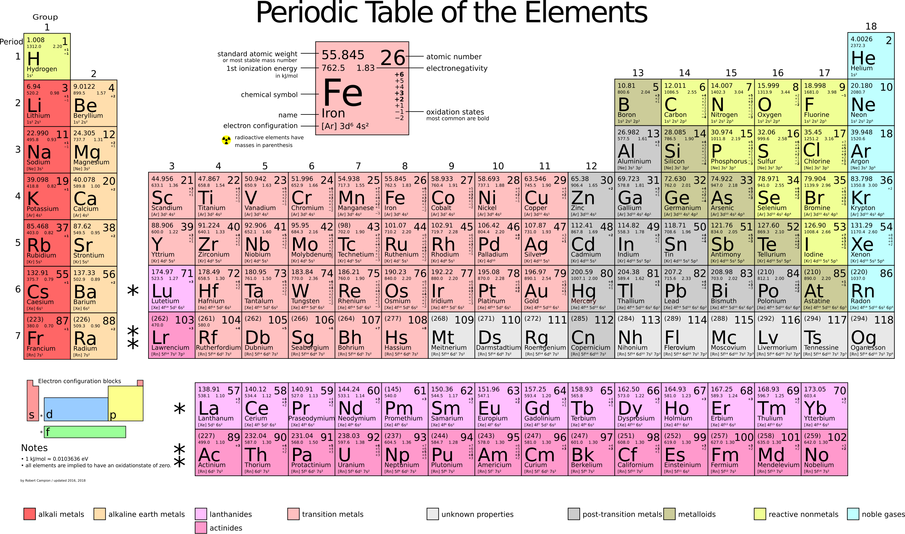

Importance of Electron Configuration
At a fundamental level, a material’s properties start with the kinds of atoms it’s made of and how those atoms bond together. Because different atoms have different numbers of electrons—especially in their outer shells—this affects how they interact and form bonds. The periodic table helps us understand these differences by arranging elements in a way that highlights patterns in their electron structures. Elements in the same column often have similar arrangements of outer electrons, which means they tend to behave in similar ways when forming bonds. As you learn more, you’ll see how knowing the bond type will allow you to predict why some materials are strong or brittle, some conduct electricity well while others are insulating, and why some behave differently when they are heated or cooled.
Interactive Periodic Table (first 5 rows)
First 5 rows of the periodic table. Click on an element to display its details including electron configuration, common bond type, and typical properties. The background color represents the most common bond type.
Concept Check
Use the interactive periodic table above, to answer the following questions. Check yourself by clicking on the cards.
Complete periodic table (high resolution)
The complete periodic table is shown above with detailed information on each element. You can download this figure and expand it to view the detail (or right-click and open it in a new tab). Notice the atomic weight given for each element in units of g/mol. The atomic weight will be used often in this course especially when perfoming crystal structure calculations.
Use the complete periodic table above, to answer the following questions. You may have to download the table or open it in another tab to see the detail.